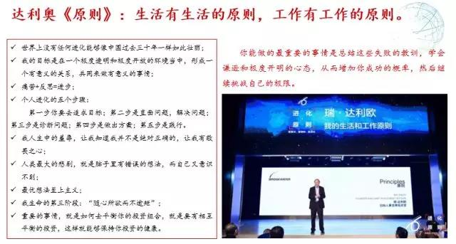

彼得德鲁克说：“一个企业只能在企业家的思维空间里成长,一个企业的成长被其经营者所能达到的思维空间所限制!”学习是打开思维空间即企业成长最快速的方式！
首先诚挚地欢迎和感谢各位来到基石资本客户年会论坛。在座的很多企业在各自领域取得了远远超越我们的成就，有的做到了国内第一，有些甚至做到了全球第一，正是你们的成长和鞭策激励着我们前进。我演讲的题目是“摆脱平庸——从PE到并购：基石资本的进阶之路”。
一、摆脱平庸：从国家、公司到个人
在中美贸易战的时候，凯恩斯的这段话重新被翻出来：“我确信，既得利益集团的力量，比起思想的潜移默化的力量来，被大大地夸大了。思想的作用确实不是能立即看到的，而是要经过一段时间。因为在经济和政治哲学领域，并没有多少人在25岁或30岁还会受新理论的影响，所以，公务员、政治家，甚至鼓动者所运用的思想，一般不是最新的。但或迟或早，无论是好是坏，危险的是思想，而不是既得利益。”
对凯恩斯这段话我的理解是，思想的影响非常地重要，很多时候思想的影响会引发一些根本性的改变。1848年的时候，马克思、恩格斯看到社会巨大的冲突和矛盾，写了《共产党宣言》，预测由于生产力和生产关系不可调和的矛盾，资本主义一定会消亡。但现在，大家可以看到，资本主义没有消亡，很多资本主义国家改进了自己的福利政策和劳动政策，使社会矛盾得以调和。在70年之后，资本主义国家没有发生革命，反而是俄国发生了革命，去践行马克思、恩格斯这一套理论；100年之后，中国发生了革命，为消灭私有制进行了非常激烈的社会变革。应该说整个20世纪是一个极端的年代，很多极端的变革和实验都给人类社会带来了灾难。可以看到，思想的力量如此深刻而且强大，在潜移默化当中发挥作用，改变社会。到现在，《共产党宣言》也被认为是20世纪最重要的著作。
现在舆论焦点的中美贸易冲突，就我个人的理解，贸易只是一个导火索，背后还有更深刻的经济原因、政治原因。从本质上来说，西方社会并不希望一个历史遗产、经济形态、社会制度、国家治理、价值观跟他们不一样的国家崛起。阎学通认知的其实真正能够崛起的国家不超过5个，大国到了一定的阶段之后是要互相遏制的。中国并没有像西方所认为的由于中产阶级的出现导致政治体制的变革。所以，西方社会总会以另外一种眼光看待中国。中美贸易冲突才刚刚拉开序幕，背后的原因是深刻的，是意识形态和价值观的巨大冲突。资本市场对这个问题做了过度的解读，所以看到资本市场的波动很大。实际上中美两国都有巨大的回旋余地，政客有政客的方法，企业有企业的方法，没有大家想象得那么糟糕。
1.国家：西方经济“新平庸”与中国的奇迹
我这几年一直在思考一个问题：推动中国经济前进的力量究竟是什么？如果对这个问题没有思考，或者没有想明白，很容易被经济的波动影响当前的心态。我个人认为，最能解释中国经济增长的是人与体制的化学反应，进而是核反应，迸发出巨大能量和威力，也彻底改变了物质形态。中国几千年来都是抑商的，本质上是满足意识形态的专制控制权的需求，对商业严格控制。即便国家资本主义，工业化也没有走成功。而中国老百姓是全世界少有的聪明、勤奋、高度物质主义的一个民族，并不是全世界所有民族都有这个特点。几千年来中国第一次出现了政府和老百姓的“撞击”发生了“核反应”，产生了一个深远后果，彻底改变了中国的形态。
1978-2018年这四十年间，中国的GDP从占全球的1.8%，到占全球的14.8%；人均GDP由300多美元增长到9200美元。背后的原因，很多人没有找到。科斯的《变革中国》给出了很好地解释，他认为政府这只手的确在释放制度红利，在推进一些制度变迁，为改革开放注入很多因素；但是更应该看到民间力量这只手，从最初的家庭联产承包责任制、乡镇企业，再到市场化企业，成长速度非常快。正是这两只手交互影响的结果才有中国伟大的波澜壮阔的变革。这种解释比一些经济学家和历史学家的解释，更切合实际。政府这只手是必须的，不管企业愿不愿意、喜不喜欢，央行、财政、政府管控、产业政策，这只手一定在挥。
实际上，中国的这种挥法打破了所谓的“新平庸”。2014年，国际货币基金组织总裁拉加德首次以新平庸概括陷入低增长、低通胀、高失业和高负债中的世界经济。大部分欧美国家走向了“新平庸”，而中国的供给侧改革实际上是非常有效的，体现了一些新的特点。这是中国非常不同的地方，中国并没有按所谓华盛顿共识的道路走，即“彻底的市场主义，激进的休克疗法”。中国在产业政策上从来都是有所保留的，没有让外资长驱直入，这个结果体现在中国多个产业政策上。应该说中国政府做对了，比如电信产业政策对国内企业有保护，同时放开民营企业和国有企业竞争，才有华为的成长。所以华为的任正非曾经说，如果没有电信产业保护政策，华为最开始那些低劣产品根本卖不出去，华为就没办法成长。《华为基本法》起草人之一黄卫伟写了一本书叫《不对称竞争》，就讲到了这点。很多人批评中国汽车产业政策，认为以市场换技术是失败的。我最近在调研这个产业，想了解谁在说这种话？有两部分人：一部分是愤青，他们并不了解整个产业竞争格局，认为外资进入中国不得超过50%，有限的发放牌照等做法，是保护了落后的企业；另一部分是大的外资汽车企业在中国的代表势力，始终在批评中国过度保护。但政府这样做是对的，正因为如此，才有吉利、长城、奇瑞这样的企业崛起，才产生上汽、广汽这些自主品牌。如果没有这些产业政策保护，中国弱小的汽车工业基本不可能成长起来。从长期来看，中国汽车产业将复制手机制造业在全世界的格局。汽车产业是现代工业的核心，全球53家千亿市值的企业有9家是汽车产业，汽车产业也代表了一个高度成熟的工业制造体系。这些弱小的本土产业需要一定程度的保护才能够成长起来。林毅夫把这个概念归结为“田忌赛马”策略。我不按你的招数来出牌，而是错位竞争。如果发展中国家仅仅是按照西方规划的道路走，会停留在初级产品的加工制造上，不容易完成自身积累、国内企业的积累和工业化的转型。
上面这幅图挺形象地说明了当前情况：你在钓鱼，别人在钓你的筐子了。中国这几十年的发展，正像周其仁先生讲的“水深鱼大”，这也是解释中国经济和各种实业冲突最重要的一个变量。中国本土市场容量巨大，所以中美贸易上有比你想象更多的回旋余地。中国正是因为如此巨大的深度，所以孵化出一批世界级的企业：全球500强企业，中国有115家，除台湾6家，还有109家；全球十大市值公司，中国有腾讯和阿里2家。这是我们过去完全不能想象的繁荣。
大家批评中国经济的时候，往往用不平衡、不可持续来评价，但一个社会如果平衡、可持续的话，肯定是低欲望的社会了。日本的大前研一写了一本书《低欲望社会》，描述后工业化社会的特点：“日本年轻人没有欲望、没有梦想、没有干劲，日本已经陷入了低欲望社会。”是不是由于经济低迷导致压力太大，欲望就没有了？实际上早在上世纪八十年代，日本并不像大家所想象的是充满欲望的社会，而是进入一个低欲望的时代。出生人数开始持续走低，死亡人数持续增加，这说明“低欲望社会”是一个后工业化社会的结果，不完全是经济低迷所带来的压力。我们的中国，正在进入后工业化社会和中产化社会，社会已经开始分层，但中国还有3000万人口需要脱贫，中产阶级在形成，同时更早富裕起来的一些人士，他们已经进入了后工业化时代的价值观、思维以及消费方式。中国市场和消费表现出更多特点，进入后工业化的社会，人们往往容易忧郁，但在你拼命赚钱买房子、买车的时候，你来不及忧郁，一旦拥有了一切的时候，你就困惑于所谓的生命价值问题。
2.公司：“摆脱平庸”与企业经营之道
讲完国家，我们讲公司。我在深圳机场看到一幅图，这一幅图是华为做的广告。这个广告上只有一句话：“不在非战略机会点上消耗战略竞争力量”。我上网查了一下这幅图的解释：一个瓦格尼亚人，在刚果博约马瀑布手持巨大尖锐的木篮，站在巨浪翻滚的激流中。他只有在适当位置使用恰当力量，湍急的河水才能顺势将鱼推进去，而他也不会让河水卷走。华为用这幅图想表达什么？公司必须把它的战略资源集中在有战略意义的领域。
据说，任正非用这句话是受到了二战案例的一个影响。1940年的时候，德国在波兰闪电战得手，准备对英法联军展开攻击。德法边界修了固若金汤的马奇诺防线。德军把他更大的主力集中在A集团军，这个A集团军绕过马其诺防线，通过了大家认为不会走的阿登高地，那是一个森林密布的坦克不易通过的地区，集中力量出其不意发动了闪电战，结果它成功了。去年的电影《敦刻尔克》，讲的就是德军突破马奇诺防线后在敦刻尔克围堵英法联军的故事。
华为清晰表达的意思是，如果均匀使用力量，不能产生压强，公司不容易脱颖而出。华为公司是摆脱了平庸的，去年6千亿销售额，480亿利润，其中研发人员8万人，研发费用900亿，中国没有哪个公司能做到这个高度。实际上华为一直在清晰定义自己的主业，以及主业相关的小心翼翼的业务扩张，华为在看待新技术、新变革的时候，他首先强调为自己服务。
二战的时候，苏联的伞兵死亡率很高，他们分析发现并不是德军的火力过猛，而是降落伞没有打开而摔死的。他们采取的降落伞质量改进办法是，让生产降落伞的厂长和车间主任先跳一遍，这样降落伞的质量立刻得到提高。华为由此得到的启示是，无论这个市场流行互联网、大数据、云计算、共享经济、区块链、人工智能也好，华为首先要解决自己的核心问题。华为认为自己的核心问题是为服务于全球20亿人口所要解决的电信运营、维护、客户响应、技术进步，而不是做一些不着边际的创新。黄卫伟老师有一次到企业讲课，走时获赠一个精巧的手持式洗衣机，上面有一句话，洗不干净，你还得送到大洗衣机去洗。某些创新看起来激发人的活力，但却是毫无意义的。这些创新如果公司不用，就会把技术和人带走，消耗公司的资源，这些简单的管理学道理很多公司看不懂。华为经过了多少年的历练，总结了自己的“深淘滩，低作堰”。这是闻名世界的都江堰水利工程的治水名言。这六字治水真经，不仅体现了古人卓越的治水理念和思想，也对现代人的人生治理以及企业经营具有重要借鉴意义。
“深淘滩”，指的是企业要确保增加核心竞争力的投入，确保对未来的投入，即使在企业暂时经营状况不好时，也不动摇这一根本。同时要不断挖掘内部潜力，降低经营成本，为客户提供更有价值的服务。
“低做堰”，就是要节制对利润的贪欲，自己留存的利润低一些，多一些让利给客户，并善待上游供应商，不要为获得更高的利润率而放弃对市场的培育和对客户的回报，不能因为短期的目标而损害长远的目标。
简单点说，深淘滩就是不管经济的高潮还是企业的好和坏，都要在研发上持续投入，降低自己的运营成本。低作堰就是要节制自己对利润的贪欲。都江堰的堰，没那么高，水多的时候可以漫过一些，在枯水期的时候把淤泥淘掉。如果不做这样的努力，堰第二年发挥的作用就比较有限。华为有自己小小的特殊的管理道理，背后是他和大的咨询公司长期操练的结果，华为提倡这种苦心孤诣、心无旁鹜、稳扎稳打的精神。
一个基业长青的公司根本性指标是，在很长的一段时间里保持比竞争对手、比资金成本高出一截的投资资本收益率（Return on Invested Capital，简称ROIC）。华为的投资资本收益率是多少？26%。它在全球的主要竞争对手爱立信，去年收益率还是正的，今年变成负24%，中兴、通用只有6%。逐步分解这些指标构成，会发现华为的运营效率是比较高的，这是它长期在这些核心领域研发和投入的结果。在强手如林的世界领域竞争，华为不像阿里、百度和腾讯商业模式上占优势，在高竞争领域所取得的成功，难度应该更大。
那么企业究竟怎样才能“摆脱平庸”？首先，企业的长期成长来自高层对管理的认知。比如华为，坚持以客户为中心、以奋斗者为本，持续改善公司治理架构、组织、流程和考核，使公司长期保持有效增长。
其次，理解产业竞争结构以及企业成长的关键驱动因素。所有有前途的公司，对管理问题是重视的，它认真思考和梳理自己的战略问题和运营效率问题。
并不是上图中象限左半部分的产业周期、产业结构、技术进步决定公司的未来，而是右半部分决定公司的未来。因为大家面临的问题可能是一样的，只有少数心无旁鹜的企业走出来了。这些企业的企业家精神、组织体系、公司治理是不一样的，这也是基石资本看企业一个重要的维度。并不是基石资本投资的每个企业都具有企业家精神和管理上的投入，但是少数优秀企业，以他们的前瞻性和远见，以及长期艰苦的努力，展示出自身的与众不同，这些少数企业会给你带来卓尔不群的回报。
第三，理解资本市场，理解行为经济学与非理性繁荣。资本市场的非理性繁荣是基于安全边际的投资能够大获全胜的原因。这几年我很推崇三位教授的观点，他们都是因为把行为经济学、心理学代入了金融和经济研究获得了诺贝尔经济学奖。丹尼尔·卡尼曼很早发现了企业价值和股价偏离的状况，罗伯特·席勒在1981年写了一篇文章，探讨企业的预期分红与企业股价之间的关系，通过分析美国大约100年来资本市场股价走势，发现二者之间几乎没有什么关系；他进一步发现，美国的宏观经济与道琼斯指数、标准普尔指数的走势也没有什么关系。去年获奖的是理查德·赛勒，通常的经济学是有效市场假说，以理性人分析为基础，而他提出了另外一种假说，就是人的情绪支配可能影响更大。正是因为资本市场存在这样的情况，所以你要进行立项投资并不是很容易掌握，核心的还是看低市盈率，并且比较它的价格。
对于我们来讲，其实资本市场上的一些波动是不容易把握的，你能够把握的，实际上只有企业情况。宏观经济其实是你不能预测和把控的，每一家预测都差不多，并不能指导你的企业实践，你不能把握的东西，只能假设它是不存在的，当然不用花费力气去分析它。
3.个人：摆脱平庸与“认识你自己”
对个人来讲，很多人的决策习惯中非理性占有一个很大的成份。我们重新看一下马斯洛的需求五层次图，最低的生理需求是与本能驱动有关系；安全的需求可能是由于害怕孤独、恐惧方面的负面情绪在支配；归属需求，是对友情、对爱情的需求在支配；自我实现、尊重需求，属于更高的人生趋向，是人生宏大的目标。可以看到，理性的因素并不多。我们在做决策的时候，经常并不是处于一个高度理性的状态。所以古希腊德尔斐神庙门楣上镌刻了一句话：“认识你自己”。我们自己经常是左右手互搏的。上世纪80年代刘再复有一本书叫《性格组合论》，在书封上他引用了法国哲学家狄德罗的一句话：“人是一种力量与软弱、光明与盲目、渺小与伟大的复合物，这并不是责难人，而是为人下定义。”人是复杂的，我们每个人审视自己的时候应该能够深刻地体会到这一点，很多决策是非理性的，是情绪化的，是容易随波逐流的。要战胜这一点很难，只有少数杰出的人能战胜这一点。像安吉丽娜·朱莉从小不走寻常路，成为一个成功的社会公益人士，摆脱了平庸，正如她说的“我从不按照别人的意见来生活”。
我认为无论是公司还是个人，如果仅仅按照别人的牌底出牌，你很难竞争成功，如果你没有成功到某一个层面，你也形成不了更多的人生认知。国家层面的竞争、公司层面的竞争和个人的成长道路一样，都有类似的一些思维，随波逐流得不到更高的认知和见解，也得不到所谓试错意义上的成功。这就是所谓的摆脱平庸。
二、投资如审美，用常识做判断
在总结基石资本的投资原则之前，先把我们基石资本的重要东西跟大家交流一下。基石资本的合伙人队伍高度稳定，离职的合伙人非常少，我们的同事认识都有20年了。对于基石资本来讲，我们怎么理解合伙人文化的？彭剑锋教授曾经做过一个小结，包含这8个字：共识、共担、共创、共享。我将之表述为下图：

“共识”，大家都有基本相同的价值观和人生理念，对企业有大致相同的认知方式，这是一个重要基础。大家认识几十年就是在互相选择。最重要的一个因素是共担，最核心的是自己把钱拿出来，别总拿投资人的钱，这不叫共担。如果你只对自己的盈利负责，损失无所谓，这不是共担，也不能形成一个良好的合伙人文化。我们的合伙人并不像律师事务所、会计事务所的合伙人文化，我们是更复杂的一个合约。如果合伙人认为自己跟公司是雇佣关系，我相信这个合伙人会找不着北，因为他没有把自己投入进来。有了共识和共担之后，就是共创，有了成果才能共享。这张图是基石资本合伙人文化的一个小结，很多管理学家都深刻阐述过这一点。前年宝万之争的时候，我们引用德鲁克的一句话：“管理世界并不是一个独立于人们心灵之外的物理世界；管理世界‘真实而客观’的图像，是由人们共同的自由意志创造的。”钱德勒也说：“专业化分工只是基础，现代大型企业的本质是‘协调’或‘分工基础上的协作’。依靠管理实现有效协同，是一个企业或经济组织的力量源泉，是财富创造的内在秘密。”巴纳德、西蒙这些管理学家也有过类似表述，这些代表了我们对现代企业组织的一个理解。
基石资本现在有12名合伙人，去年的合伙人队伍增长的速度比较快一些，来源也更多元化。过去我们主要是单一的券商背景，现在有一些管理咨询、实业界的背景。
目前，投资发生了一些变化，借用亨廷顿的“文明的冲突”概念，文明的冲突之后是一个新的时代，互联网经济、电子商务爆发式增长导致社会发生了深刻的变化。中国资本市场，很重要一个变化是变相的注册制开始实施了，近四年的IPO增长非常快，带来了估值中心的大幅度调整，次新股指数从2016年7月57600点，跌至目前25777点，下跌55%。大家可以看到，过去中国企业上市的这些边缘化的、盈利能力不强的小企业的估值体系受到冲击，意味着中国资本的价值体系正在重构。过去简单靠小盘股的发行套利的模式也受到一些影响，我们有一些基金，收益上以后也会受到影响。估值重心的下降和价值体系的重构正在加快进行。像富士康这种企业，在国内成立了三年，申报了证监会20多天就批了，证监会自以为做了很多创新，挑战了很多规则，也引发了市场对这种创新的很多质疑和不满。
另外，可以更多的看到这个市场大型企业崛起，CDR、BATJ的回归，代表中国经济的不再总是茅台，而应该是代表新经济的这些企业。腾讯去年上涨了一倍以上，阿里巴巴的市值也非常可观。大企业会形成一个强者更强的虹吸效应。在这点上，在新经济中企业上看得非常清晰，很多靠商业模式成功的企业，都在BATJ中选边站队。这些企业在国内利用资本市场，对投资以及资本市场的价值体系来讲，都构成了一些深刻的影响。基于此基石资本形成了自己的原则。
第一，从第一层思维到第二层思维。橡树资本董事长霍华德·马克斯在《投资最重要的事》一书中论述过，学会第二层次思维的重要性：第一层次思维者对相同的事件有着彼此相同的看法，通常也会得出相同的结论，这不可能取得优异结果，战胜市场是不可能的；第二层次思维深邃、复杂而迂回，为了取得优异的投资结果，你必须对价值持有非常规性的并且必须是正确的看法。怎么理解呢？第一层思维上认识到的企业，那只是一个表象，这是90%的专业人士所停留的思维程度，大多数券商的研究报告就这个水平。第二层思维，你必须看得更多一点，你看某一个行业，应该对它的历史和全世界范围所有企业，以及产业链上下游有更深的了解和洞察，才能把一个企业看得更清楚一些。第二层思维所涉及到的不仅有财务技巧，还包括企业家精神的一些看法。
第二，不追风口，不堵赛道。那些在风口的企业和非常热闹的企业基本看不到基石资本的影子。因为这个赛道是非常拥挤的，风口也是容易消失的。我们很少追这些市场上的“大众情人”，对于“小家碧玉”的企业，我们会多看几眼。
第三，只有当球落在 “最佳”格子时，才会挥棒。从投资的角度来讲，查理·芒格说：“我能有今天，靠的是不去追逐平庸的机会”。泰德·威廉姆斯是过去70年来唯一一个单个赛季打出400次安打的棒球运动员。在《击球的科学》中，他阐述了他的技巧。他把击打区划分为77个棒球那么大的格子。只有当球落在他的“最佳”格子时，他才会挥棒，即使他有可能因此而三振出局，因为挥棒去打那些“最差”格子会大大降低他的成功率。也就是说，他会牺牲一些击球区域，同时挥棒的成功率会大大提高。从基石资本角度来看，我们发现大部分的投资只能获得平庸的收益，对于养100人队伍的公司高层来讲，最重要的是发现其中有创造意义的交易机会，即便在PE领域，发现了重点项目，就要进行重仓式投资，这是公司高层的责任。有些交易机会不是市场中成长出来的，而是创造出来的。
1992年，索罗斯狙击英镑，经理人德雷克看到里边有机会，要求全仓杀入15个亿，索罗斯认为他错了，如此难得的机会，我们应该加杠杆，投入100亿。用巴非特的话来讲，真正的机会到来的时候，不应该用一个顶灯去接，而是应该拿一个水桶去接。在机会到来的时候敢于下重仓，敢于作出关键性的判断，决定着一个公司完全不一样的投资风格和最后的业绩。
第四，投资如审美，用常识做判断。很多时候投资会挑战你的常识，如果它挑战了你的常识，还是可以住手。我经常坐飞机到南京机场，那里放了一个保利复制的圆明园铜像兽首，每次看到，我都为它的粗糙简陋所震惊，这些东西怎么就是国宝了？如此粗糙简陋，因为它起初就是喷水池的一个口，谈不上很精美，但是这件事在资本上是怎么做的？在1985年的时候才一千来块钱，2000年的时候值六七百万，2007年就值六七千万，2009年的时候它以一个难以想象的价格在出售。这就是典型的坐庄，背后的逻辑是掀起全国人民的爱国热情。为了拯救这一批文物，海外很多人在摇旗呐喊，海外的古董商在放货。举这个例子是想说明，如果真地挑战了你的常识，你觉得这个企业根本不值这个钱，就不用纠结，放弃它。但背后需要有信心，这来自于你自身的一种审美，如果你长期形成了自己的审美观点，就不会这种舆论上的声音所绑架。比如，基石资本对于商业模式的成功是偏谨慎的，最终还要检验他们的运营能力，因为商业模式非常容易被拷贝；很多新技术企业不容易成功，在技术上是响当当的，但在管理上很快失控，最后没办法产业化。我们看到更多的情况是，蛋糕还没有做起来，团队为分蛋糕吵起来了，把面盆砸了。
这是做投资很重要的因素。早期项目我们不是不投，但总的来讲，不会像撒胡椒面一样，投一个商业模式成功的共享经济，这些共享经济建立在烧钱的基础上，我们很难保证它的未来。最后杀出来的个别几家，是从无数白骨中爬出来的，要最终抓到这一家胜出者，其实难度挺大的。所以我们通常对造车“新势力”的产业，是不会投的。因为其中是一个简单的道理，你可以用互联网的思维去运营车、做出行，但并不能用互联网的思维去造车，也就是说，不能用一个商业模式去造车。即便杰出如特斯拉这样的企业，它的产能也不超过10万台。反过来讲中国这些企业规划的产能，把自己想象得过于乐观了，所以很多企业都是把自己的车委托给其他的企业来造。
基石资本这些最基本的观点显得我们很保守。其实，我们也没有这么保守，比如对柔宇科技是连续投资，因为他们拥有世界级的平台型技术；对商汤科技更看好一点，因为他们企业非常接地气，它拥有的平台基础已经在多个领域取得了突破，所以我们进行了一些重仓的投资。
第五，不与资本玩家做生意。基石资本很早就形成一个规矩，回避看不懂的企业，回避职业玩家的控盘股，回避高估值的企业。我们不跟职业资本玩家做生意，因为你搞不懂这些人在说什么。凡是他们操控的各种业务，各种竞争，我们都不参与，目的是把好安全边际关，才能积小胜为大胜。
第六，不赌，相信复利的力量。大家可以看到，资本上的各种“系”都容易出问题，很多都容易吃得过胖。猪肥了，被杀了。之所以容易出问题，一是剑走偏锋，跨越式发展。二是利用政治资源，政商结合，这是一把双刃剑。对于一个企业来讲，还是依靠自己点点滴滴的努力和积累，做得扎实一点。对我们来讲，需要找到完全基于价值投资，长期持有安全边界的企业，坚信杰出企业家的超额回报能力，或者长期规范重组，规避任何不规范的行为，规避瓜田李下，做永续经营的公司。只有这样才能活得久，活得长。大部分人的思维都想一口吃个大胖子，他们相信的是多巴胺，而不是内啡肽。多巴胺和内啡肽都是神经化学物质，多巴胺更大程度上代表的是奖赏，这种东西很容易成瘾，最终能带来的幸福快乐比较少。而内啡肽是持续的激励，跑步30分钟以上才会有内啡肽的分泌，多巴胺是瞬间的心动，内啡肽才最长久。从做企业来讲，不是要一次性获得一个大的回报，而是持续取得一些小的胜利，带给你的幸福感更多一些。

上图是我阅读达利奥《原则》的收获，其中值得一提的有两点：第一，痛苦+反思=进步；第二，达利奥并没有简单地在民主决策制和个人专制中二选一，而是选择了一种更有意义的做法，用一个高度开放的体系鼓励大家发言。绝对的一人一票不见得科学，一个人说了算更不科学，达利奥走出一条中间道路，鼓励大家发表自己的看法，提出自己的专业见解，并没有简单用一人一票制来决策。
三、关于投资控股的一些秘诀分享
基石资本从2000年之后就开始进入一些控股型的投资。一开始没有区别VC投资和PE投资，做这些资产管理业务也并没有这么多的条条框框。2003年时，我们一共才两三亿，就想一把投进去收购南孚电池。控股性投资首先是基于产业洞察，需要看明白产业的方向和企业的格局、优势。
1.公司治理决定了控股型投资的成败
在洞察产业的前提下，控股投资能不能成功，在很大程度上取决于对公司治理的理解。应该说，没有一家控股型投资是省油的灯，每家企业都挺复杂的。要充分理解和正面认知公司治理的复杂性，长期善意与它相处，要进行系统的布局，落实细节；同时，对私心重、缺少格局的人要坚决淘汰，耽搁的时间越长对企业的损失越大。真正碰到好的企业团队非常少，像山东六和团队非常好，卖给了新希望，后来并不能融合，结果中高层几乎全辞职了。华商报业的管理层也是非常好的团队，容易相处，他们创造性的在这个行业正在进行大变革的前夕，把一张报纸由5000万做到了6亿。遇到好的管理层是你的幸运。控股型营收，总的来讲，不能用太大的杠杆，也不应该因误会跟管理层发生更大的冲突。
2.控股型投资与PE的差别
我对控股型合作和PE投资做了一个区别：PE投资更像是搭个便车，实际上你并不是驾驶员，需要尽量选一个好车；控股性投资就不是搭便车了，而是坐在副驾驶座，所以必须知道企业在极端情况下怎么去处理问题，必须与一个团队充分学习和融合，才能把这些问题处理好。控股型投资难度更大，如果说PE投资是中学生水平，那控股型投资就是大学生水平；就像说地产开发是中学生水平的话，商业地产运营就是研究生水平，这其中差别很大。
3.资产管理的多种和另类解法
我把资产管理比作一道算数题，大家用不同的方法来解，巴非特和3G资本用了一些非常另类的方法解题。在这方面，协同效应，特别是增量的协同效应仍然是私募股权资本从并购市场获得利润的主要思考点。KKR风格的“减法”型并购，是通过剥离低效业务和人员、通过财务杠杆降低税负等方式，还不是中国私募股权资本的首选。
巴西的3G资本拥有极强的全球产业整合能力，擅长大规模、长周期的价值投资，通过取得控股权，导入强大的主动性投后管理，积累现金，不断扩张。它深度参与企业，长期收购、长期整合，目前来讲他们运营的企业市值是3000多亿美元，每年营业收入1000亿美元，基本上成了全球最大的食品企业。他们的背景跟我们很像，最初做投资银行，然后做一些PE管理，在1989年的时候买了第一家啤酒企业，十年后又买了南美洲的另外一家啤酒企业，已经投资百威、汉堡王、亨氏、卡夫、提姆霍顿咖啡、SAB米勒等巨头。经过连续的收购，背后是长期的经验积累，并不是一步登天的，第一次收购到第二次收购间隔了10年。它跟巴非特的公司也有一些合作，他们联合收购了亨氏，这是一个巨大的交易额，管理权在3G资本手上。
另外一家解法也比较另类，就是巴非特的伯克希尔-哈撒韦公司的做法，主要是保险业务的产融结合，我称之为“动作危险，请勿模仿”。很多人没有看明白，巴菲特最近60%是控制型投资，40%是股票和债券。他完成了一个组合，用保险的零成本资金去投资股票，股票投资收益又转化为实业经营的资本金，实业经营的利润则成为保险业务扩张的流动性后盾。动作其实是惊险的，很难模仿。因为产融的每个环节上都不能掉链子，一旦掉链子就会发生重要的问题。巴非特处理得比较好，保险业务严格控制了它的成本风险，他已经是全球比较大规模的前列保险公司，但是他的扩张方法依然是谨慎的，对风险定价是清晰的。股价必须长期保持正收益，难度也很大。实业投资必须要保持正现金流贡献，以巩固保险业务的流动性。所以他的投资组合，大部分都是一些现金流比较稳定的企业，例如食品，已经被证明成功的银行、制造业等。
巴菲特控股的公司有80家，远远超乎想象。近几年发生了一些变化，包括他认为在二级市场上不容易以低估值买得股票，所以增大并购，这也是巴菲特的一个重要思维。巴菲特的确是长袖善舞，做出这种动作非常难，因为企业其实是不容易控股的。美国跟中国有一个最大的分别，在中国控制这么多企业很容易分崩离析。国外早就形成了成熟的职业经理人文化，股权本身是高度分散的，这些比较成熟的职业操守文化和法律，给他们提供了重要的支持，所以他可以做这种80家控股型的投资。关于控股他还有他的一些秘诀。
秘诀一就是坚守标准。这些标准包括：
（1）越大越好（希望单笔交易在50亿到200亿美金之间）；
（2）已经被证明有可持续盈利能力；
（3）在负债率较低的情况下能够产生良好的净资产回报率；
（4）称职的管理团队（我们没法替代）；
（5）业务简单（如果太多高科技我们没法理解）；
（6）价格确定且合适（当一个标的公司的出售价格还没有确定时，我们不想浪费时间和卖方精力）。
秘诀二：善意收购。
秘诀三：保持冷静。
秘诀四：厌恶杠杆。
这些东西是中国企业不容易做到的，就像平安买了家化以后，声称支持家化的发展。长期的资金投入与理财资金有内在的冲突，时间上不匹配，所以以上说的其实是不容易学的。
4.控股型投资需要创造性
并购成功的要素，包括产业理解和产业资源，一些正确的并购策略，以及对管理层道德风险的控制。控股性投资并没有标准型的答案，是随机应变的。真正一些好的动作、好的标的也是这样。策略并无标准步骤和答案，需要创造性。这两天会议大家可以看到我们在医药连锁上收购的逻辑和思维，在药房已经完成的投资量大概有50亿，在2018年能够达到55亿，很快可以构建成一个国内比较前列的药房连锁企业。
同时我们看到了新能源汽车产业链上的投资机会，这个行业的确是未来重要的行业，我们称之为三个终端之一，手机、住宅和出行终端。新能源和智慧驾驶、无人驾驶叠加在一起，正在重构整个产业。全球的汽车制造产业中，中国的利润构成微不足道，但是中国已经是全球最大的市场——3000万辆的市场。在新能源汽车和无人驾驶领域，中国确实存在重构产业领域的机会，中国官方政策的确非常偏向支持这一块。
这几年基石资本也有一些跨境收购的案例。站在控股性的投资角度来讲，无论国家外汇政策是紧还是松，未来十年跨境收购都是中国企业的路线，因为这是中国企业完成它收购的必由之路。在先进制造业，不可能这么快的积累，只有通过收购来解决这些问题。国家很快看明白了这个问题，外汇再紧，首先要干正事。
对国企改革，我们也有自己的一些看法。国企改革的核心并不是管人、管事转向管资本，因为这些是不可分离的。如果改革脚步停留在这个层面，永远都是一个死结。基石资本总结出国企改革成功的核心原则，即通过构建产权和公司治理基础来培育和保护企业家精神。基石资本作为职业投资人，通过投资安排，在国企改革中设立适当的制度和股权激励机制，激发企业家精神，从而最大化资产的社会效率。对于这种管理层不持有股权的改革，我们认为它的机制是不会转变的，我们更看重对管理层的控股性投资，彻底改变其经营机制的机会。如果达不到这一点，管理层也必须持有股权。所以，国企改革的本质在于公司治理革命，而不是绕一些名词和概念。对于我们来讲，我们要围绕着企业家精神来处理这个问题，所以我认为它包括三个运作的层面：一个是公司治理层面的调整，第二是证券化和流动性，第三是通过收并完成它的产业升级。
四、用商业手段更好地解决社会问题
金融资本与产业资本的美好融合。1949年，米塞斯就说过：“市场是一个过程,市场过程的推动力量是企业家。” 以往的产融结合是产业资本多元化从事金融业务，以发挥产业资本在某些特定领域的风险控制优势，或基于产业组合稳定现金流的资金成本优势。基于现代金融体系的产融结合则更多表现为产业资本与金融资本基于价值链重构和轻重资产分离的分工协作模式，即：1.产业资本以轻资产方式聚焦于运营管理或投资管理领域，以充分发挥自身的运营能力；2.金融资本则以重资产方式为行业提供长期资本和套利资本，以充分发挥自身的低资金成本和分散化组合投资优势。
产业资本与金融资本的结合将推动整个行业的规模化和专业化发展，并在这个过程中使行业整体的运营成本和资金成本都显著降低，行业整体的利润空间提升，其竞争模式也将由此发生根本性变革。产业资本与金融资本结合的三个阶段分别是：阶段1，基于业务层面经营协同的产融结合模式；阶段2，基于公司层面金融协同的产融结合模式；阶段3，以整个产业链的价值重构为特征。
金融资本和产业资本的融合，一般都是供应链金融和消费金融的模式。如GE金融这种模式，由于它的规模过大，在金融危机上造成了巨大的压力，最后剥离。我们想探索的是一些新方式，比如怎样把轻重资本进行剥离，重构价值板块。
共同构建企业家社会。德鲁克认为，“企业家社会”就是以创新的渐进方式，而不是革命的暴劣、破坏的方式，在实现社会发展改进的同时延续文化文明的传承，从而保持稳定运转的一个社会。他主张国家和社会也应该像经济领域中的企业一样，需要创新和企业家精神。因为这种精神，不是要彻底连根拔出，而是以最大努力寻求循序渐进。从一种产品，到一项策略，再到改善一项公共服务，试验性的推进，如果没有产生预期和所需要的结果则会消失。这种精神务实、不教条，脚踏实地、不浮夸，它承诺保持社会、经济、公共服务机构或者企业的灵活和自我革新，通过代代革新，有目的、有指导和有控制地实现革命希望实现的目标。而不是通过流血、内战和集中营的方式来实现。
改变世界——用商业手段更好地解决社会问题。最近连续三年年会中，我们反复讨论一个主题，即让平凡的企业拥有抱负和使命感，希望用商业手段更好地解决社会问题，成为一个社会企业，其中企业家是最关键的力量。《如何改变世界》的作者戴维·伯恩斯坦这样定义社会企业家：“为理想驱动、有创造力，质疑现状、开拓新机遇、拒绝放弃，构建一个理想世界的人。” 社会企业家会对自己领导的企业进行改革，也能使一个垂死的企业重现活力。最重要的是，他们能通过发掘他们所服务的社区和人群的潜力来改变他们。
我们同样怀有使命。有一种说法是我们不要受到西方的影响，靠自己发展，这根本不可能。中国学习了大量国外的技术、案例，西方的价值观也会影响我们。硅谷的杰出企业家如何处理自己的事业和财富问题，会深刻影响到中国的一些企业家。他们是以自己的创造性，给社会提供了创造性的价值。我们这代人，会或多或少地受到那批人的影响，逐渐通过技术改变社会。
余英时曾经说过，“对中国的前途既不悲观，也不乐观。我们有更大的使命。”我们做企业也是这样。我曾经两次访问耶鲁大学，陈志武教授接待我，他问我“你对中国经济是乐观的了？”我的回答是：“我对于中国经济既不悲观,也不乐观。我们一样有更大的使命”。未来没有标准答案，有时需要知其不可而为之，周其仁说，大家上下一起拱，也许能拱出一个更好的未来。
希望各位嘉宾能在基石资本的年会上获得多层面的感受，希望你们在这儿度过一个美好的周末。谢谢大家！
联系方式：400-115-1005 邮箱:fub@tsinghua-sz.org
地址：深圳市南山区高新科技园南区高新南七道19号深圳清华大学研究院五楼


版权所有：深圳清华大学研究院 备案：粤ICP备11063336号-3 深圳网站建设：沙漠风